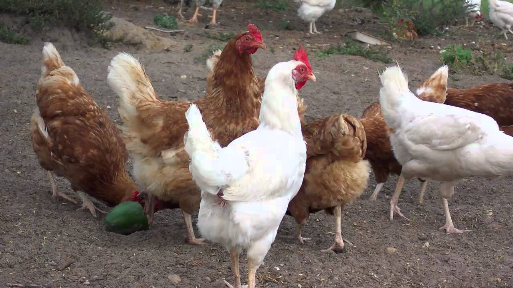

gallino
Gallino es una nueva especie descubierta en gijon,asturias, de gallina,es un ser extraño
identificado por el gerente Alak,esta
especie tiene 3 peculiaridades,la primera,es que gallino,es gay,es el primer animal oviparo capaz de tener hijos de forma homosexual
,esto quiere decir que NO es capaz relacionarse con otros generos de su raza(los machos con machos,hembras con hembras,y no binarios
con no binarios),la segunda peculiaridad es que ama los videos de vegetta777,se le hizo un experimento en los cuales se le puso un
video de vegetta777 en sus ojos y este en cuanto los veia empezaba a hacer gestos de apareamiento,la tercera peculiaridad es que
toca la guitarra,esto NUNCA ha sido visto en animales,pero se ve que gallino tiene un talento con la guitarra.Gracias por consultar
gallino en wikipedia mis huevos y espero que tenga un gran dia.